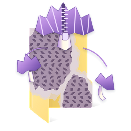
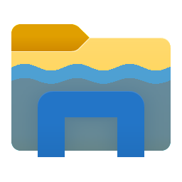
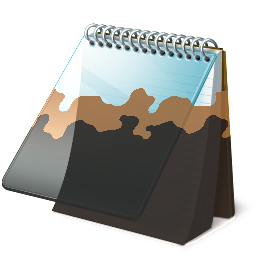
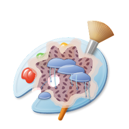
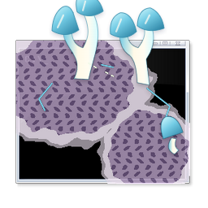
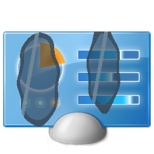
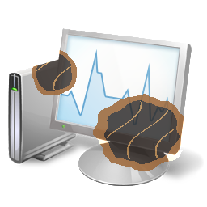

没有导航栏：整个房间就是界面
① 回南天小屋备选
最佳设计师 · 任天堂《动森》团队的思路：界面即场景，搁板是列表，工作台是护理区
最佳设计师 · 任天堂《动森》团队的思路：界面即场景，搁板是列表，工作台是护理区
huashu-design 三方向门：三套逻辑（最佳设计师 / 现实参照 / 秒数轮盘）各出两个候选。标「完整版」的三张可直接打开 dir-*.html 上手玩；其余三张是备选，看中哪张我做成完整版。






